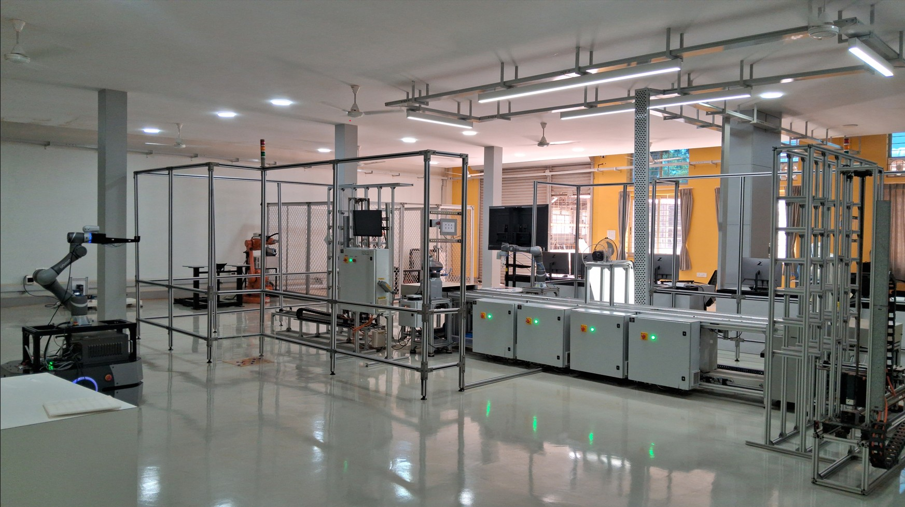

Broad domain and focus area of this project
Automating manufacturing processes using intelligent robotic systems to minimize human error and streamline output rates.
Integrating intelligence, connectivity & automation in production systems to support real-time operational flexibility in Industry 4.0.
Modern manufacturing environments demand seamless integration of collaborative robots (cobot), autonomous mobile robots (AMRs), and automated storage and retrieval systems (ASRS). This project addresses a critical gap: there is no custom end-effector available for the TM5-700 cobot to automate pallet emptying and redocking — a core material handling challenge in Industry 4.0 facilities.
TM5-700 programming & control
Custom gripper via CAD & 3D printing
LD-250 motion coordination
The **OMRON TM5-700** cobot is the primary manipulator platform for our smart ASRS warehouse docking setup. Designed to work alongside humans without physical barriers, it features an integrated smart vision system and 6-axis flexibility.
